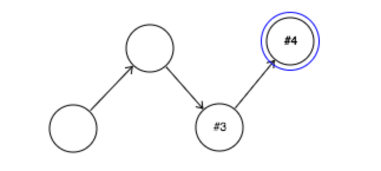

About NNP
Overview
This program can be used to create, run, and save simple neural networks.
A neural network consists of a set of interconnected nodes. Each node has a state, which can be either on or off, a threshold, and a set of connection weights with other nodes.
When it is run, the network will evolve over time. At any given time, whether a node is on or not will depend upon the prior states of the nodes with which it is connected. If the weighted sum of the connections of the nodes with which it is connected exceed its threshold, the node turns on. Otherwise, it turns off.
Additionally, there are two special kinds of nodes: noisy nodes and functional nodes. Noisy nodes have a chance of turning on at any given time, regardless of the prior state of their connections.
Functional nodes execute a specific action when they turn on. The available actions all control the critter ('billy'). These include turning left and right and moving forward.
Interface
There are a number of separate panels that control different aspects of the simulation. Each panel can be toggled visible or invisible from the menu controller in the top left. Panels can be dragged around to manage space. Just click and hold for a second, then drag the panel where you want it to be.

- About Menu
- Action Menu
- Navigation Menu
- Node Menu
- Play Menu
- Critter Cam
Networks can also be saved and loaded from this dropdown. Networks are saved to files on the users local machine.
The action panel allows the user to add or alter nodes on the canvas. These actions are:
- Select a node (have it appear in the node menu)
- Place a node on the canvas
- Move an existing node
- Connect two nodes
- Activate a node
- Delete a node
- Clear the network
The node panel allows the user to alter the options associated with a particular node and its connections.
- The node's name. This has no affect on anything but the presentation. In order to save your network, however, you will need to assign each node a unique name. Nodes are automatically assigned unique numbers.
- The node's threshold. This is the number that must be exceeded by the weighted *on* connected nodes for this node to turn on at the next time. It is represented by thicker boundaries of the node on the canvas.
- The node's type. Whether it is a normal, noisy, or functional node.
- The node's noisiness (i.e. its probability of turning on) if it is a noisy node.
- The node's function, if it is a functional node. These functions all relate to the behavior of billy, the critter viewable on the critter cam.
- The node's afferent and efferent connections, along with controls to change their weights.
The play menu controls whether the network is actively updating or not. While playing the network will update itself every second. You can also step through each update with the advance button.
The navigation panel allows the user to move around the canvas. The directional arrows move the view in the corresponding direction, and the central buttons allow for zooming in and out.
The critter cam displays billy comfortably situated in his cambrian soup. The functions associated with functional nodes can change his location, and these changes will appear here.